Explorez le Bassin Du Congo Avec Nous…
Venez explorer la mosaïque de forêts, de rivières, de Baïs et de savane au cœur du continent africain au cours d’un voyage intuitif et d’expériences immersives. Vous entrerez en connexion spirituelle avec la nature, en parfaite immersion avec les éléments qui vous entourent, sans aucune barrière.
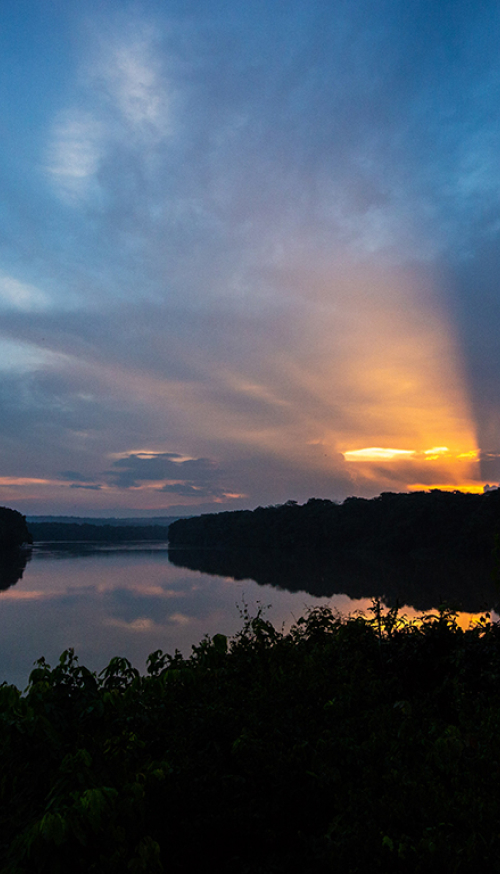
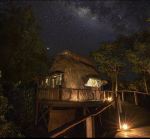
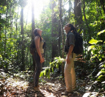
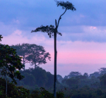
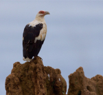
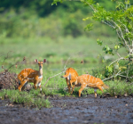
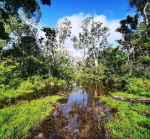
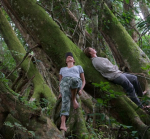
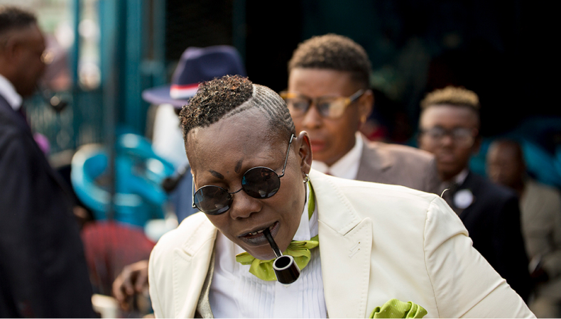
Decouvrer aussi La société des ambianceurs et des personnes élégantes qui est un mouvement culturel et de société originaire de la république du Congo plus précisément du groupe ethnique lari.
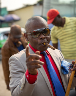
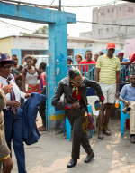
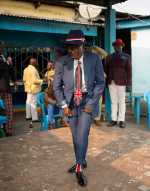
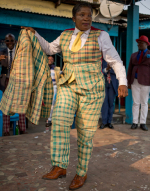
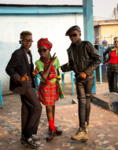